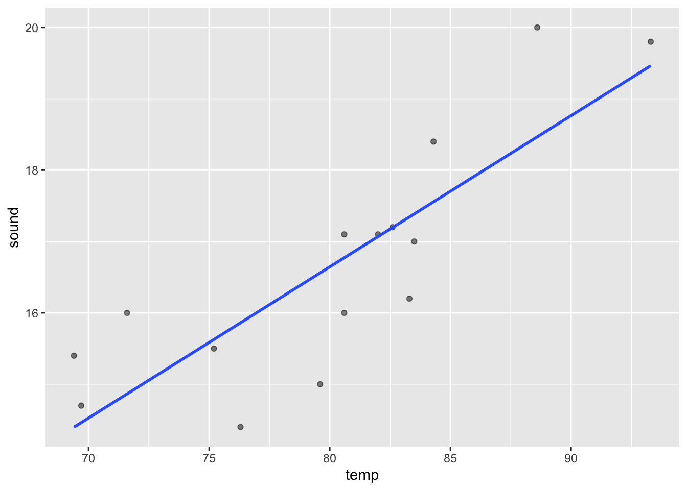
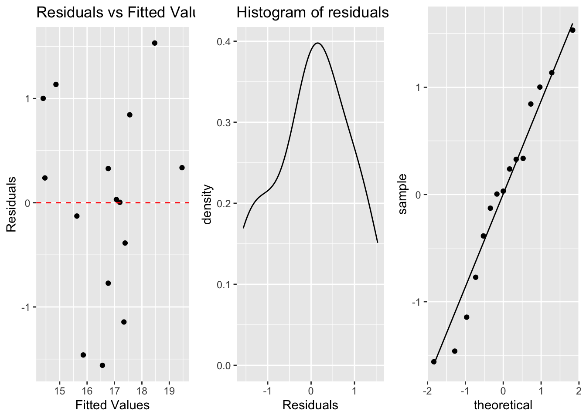

Last updated: 2020-05-29
Checks: 6 1
Knit directory: R-codes/
This reproducible R Markdown analysis was created with workflowr (version 1.6.2). The Checks tab describes the reproducibility checks that were applied when the results were created. The Past versions tab lists the development history.
The R Markdown file has unstaged changes. To know which version of the R Markdown file created these results, you’ll want to first commit it to the Git repo. If you’re still working on the analysis, you can ignore this warning. When you’re finished, you can run wflow_publish to commit the R Markdown file and build the HTML.
Great job! The global environment was empty. Objects defined in the global environment can affect the analysis in your R Markdown file in unknown ways. For reproduciblity it’s best to always run the code in an empty environment.
The command set.seed(20200515) was run prior to running the code in the R Markdown file. Setting a seed ensures that any results that rely on randomness, e.g. subsampling or permutations, are reproducible.
Great job! Recording the operating system, R version, and package versions is critical for reproducibility.
Nice! There were no cached chunks for this analysis, so you can be confident that you successfully produced the results during this run.
Great job! Using relative paths to the files within your workflowr project makes it easier to run your code on other machines.
Great! You are using Git for version control. Tracking code development and connecting the code version to the results is critical for reproducibility.
The results in this page were generated with repository version 10c28bf. See the Past versions tab to see a history of the changes made to the R Markdown and HTML files.
Note that you need to be careful to ensure that all relevant files for the analysis have been committed to Git prior to generating the results (you can use wflow_publish or wflow_git_commit). workflowr only checks the R Markdown file, but you know if there are other scripts or data files that it depends on. Below is the status of the Git repository when the results were generated:
Ignored files:
Ignored: .RData
Ignored: .Rhistory
Ignored: .Rproj.user/
Unstaged changes:
Modified: analysis/linear_regression.Rmd
Note that any generated files, e.g. HTML, png, CSS, etc., are not included in this status report because it is ok for generated content to have uncommitted changes.
These are the previous versions of the repository in which changes were made to the R Markdown (analysis/linear_regression.Rmd) and HTML (docs/linear_regression.html) files. If you’ve configured a remote Git repository (see ?wflow_git_remote), click on the hyperlinks in the table below to view the files as they were in that past version.
| File | Version | Author | Date | Message |
|---|---|---|---|---|
| Rmd | 13011f1 | KaranSShakya | 2020-05-28 | week 2 - R |
| html | 13011f1 | KaranSShakya | 2020-05-28 | week 2 - R |
| Rmd | 11e02b8 | KaranSShakya | 2020-05-27 | linear reg. - first |
| html | 11e02b8 | KaranSShakya | 2020-05-27 | linear reg. - first |
| Rmd | 8ee3b5d | KaranSShakya | 2020-05-27 | duke’s linear regression site |
| html | 8ee3b5d | KaranSShakya | 2020-05-27 | duke’s linear regression site |
This summarizes key concepts and directions for performing linear regression. Most of the steps are taken from Duke University’s Linear Regression and Modeling course on coursera.
correlation is the strength of linear association
correlation coefficients are sensitive to outliers
\(R = cor(x,y). R^2 = (correlation)^2\)
This is the correlation code for a table (x=temp, y=sound).
cor <- cricket %>%
summarise(r=cor(sound, temp)) %>%
pull(r)
cor[1] 0.8351438This is the scatterplot to see the points.
ggplot(cricket, aes(x=temp, y=sound))+
geom_point(alpha=0.5)+
geom_smooth(method = "lm", se=F)
| Version | Author | Date |
|---|---|---|
| 8ee3b5d | KaranSShakya | 2020-05-27 |
Residuals are the difference between observed and predicted values. To visualize this we have used the broom package to test the residuals.
\(Residuals (errors) = observed - predicted\)
lm <- lm(sound~temp, data=cricket)
lm.table <- augment(lm) #can visualize all the residuals in a table formggplot(lm.table, aes(x=.fitted, y=.resid))+ geom_point(alpha=0.5)
Best way to have a linear regression line is to minimize the sum of squared residuals.
\(Slope(b_1 = SD_y/SD_x * R)\)
lm.sd <- lm.table %>%
summarize(sound.sd=sd(sound), temp.sd=sd(temp), cor=cor(sound, temp)) %>%
mutate(slope=(sound.sd/temp.sd)*cor) #Slope = 0.211When we look at the lm model, the slope is also 0.211.
summary(lm)a. Linearity (scatterplot + residual plot - residuals needs to be random)
b. Nearly normal residuals (histogram of residuals or QQ residual plot)
c. Constant variability (residual plot)
Link for interactive regression diagnostic test.
a <- ggplot(lm.table, aes(x=.fitted, y=.resid))+
geom_point()+
geom_hline(yintercept = 0, linetype="dashed", color="red")+
labs(title="Residuals vs Fitted Values", x="Fitted Values", y="Residuals")
b <- ggplot(lm.table, aes(x=.resid))+
geom_density()+
labs(title="Histogram of residuals", x="Residuals") #geom_density can also be added
c <- ggplot(lm.table, aes(sample=.resid))+
stat_qq()+
stat_qq_line()
grid.arrange(a, b, c, ncol=3)
| Version | Author | Date |
|---|---|---|
| 11e02b8 | KaranSShakya | 2020-05-27 |
Hypothesis testing on the slope to identify if the explanatory variable is a significant predictor.
Null hyp: H0 = 0 (no relationship). Alt hyp: H1 not 0 (yes relationship).
\(t-stat = (pointestimate - null value) / SE\)
summary(lm)
Call:
lm(formula = sound ~ temp, data = cricket)
Residuals:
Min 1Q Median 3Q Max
-1.56009 -0.57930 0.03129 0.59020 1.53259
Coefficients:
Estimate Std. Error t value Pr(>|t|)
(Intercept) -0.30914 3.10858 -0.099 0.922300
temp 0.21192 0.03871 5.475 0.000107 ***
---
Signif. codes: 0 '***' 0.001 '**' 0.01 '*' 0.05 '.' 0.1 ' ' 1
Residual standard error: 0.9715 on 13 degrees of freedom
Multiple R-squared: 0.6975, Adjusted R-squared: 0.6742
F-statistic: 29.97 on 1 and 13 DF, p-value: 0.0001067t value can be foudn by: (0.211 - 0) / 0.039 = 5.4
For 95% confidence interval (CI): 0.211 +- 2.06 x 0.0387 = (0.13, 0.29)
Analysis of Variance
anova(lm)Analysis of Variance Table
Response: sound
Df Sum Sq Mean Sq F value Pr(>F)
temp 1 28.287 28.2873 29.97 0.0001067 ***
Residuals 13 12.270 0.9438
---
Signif. codes: 0 '***' 0.001 '**' 0.01 '*' 0.05 '.' 0.1 ' ' 1\(R^2 = SS(reg)/SS(total) = 28.287/30.5\)
sessionInfo()R version 4.0.0 (2020-04-24)
Platform: x86_64-apple-darwin17.0 (64-bit)
Running under: macOS Catalina 10.15.4
Matrix products: default
BLAS: /Library/Frameworks/R.framework/Versions/4.0/Resources/lib/libRblas.dylib
LAPACK: /Library/Frameworks/R.framework/Versions/4.0/Resources/lib/libRlapack.dylib
locale:
[1] en_US.UTF-8/en_US.UTF-8/en_US.UTF-8/C/en_US.UTF-8/en_US.UTF-8
attached base packages:
[1] stats graphics grDevices utils datasets methods base
other attached packages:
[1] gridExtra_2.3 broom_0.5.6 readxl_1.3.1 forcats_0.5.0
[5] stringr_1.4.0 dplyr_0.8.5 purrr_0.3.4 readr_1.3.1
[9] tidyr_1.0.3 tibble_3.0.1 ggplot2_3.3.0 tidyverse_1.3.0
[13] workflowr_1.6.2
loaded via a namespace (and not attached):
[1] Rcpp_1.0.4.6 lubridate_1.7.8 lattice_0.20-41 assertthat_0.2.1
[5] rprojroot_1.3-2 digest_0.6.25 R6_2.4.1 cellranger_1.1.0
[9] backports_1.1.6 reprex_0.3.0 evaluate_0.14 httr_1.4.1
[13] pillar_1.4.4 rlang_0.4.6 rstudioapi_0.11 whisker_0.4
[17] Matrix_1.2-18 rmarkdown_2.1 labeling_0.3 splines_4.0.0
[21] munsell_0.5.0 compiler_4.0.0 httpuv_1.5.2 modelr_0.1.7
[25] xfun_0.13 pkgconfig_2.0.3 mgcv_1.8-31 htmltools_0.4.0
[29] tidyselect_1.1.0 fansi_0.4.1 crayon_1.3.4 dbplyr_1.4.3
[33] withr_2.2.0 later_1.0.0 grid_4.0.0 nlme_3.1-147
[37] jsonlite_1.6.1 gtable_0.3.0 lifecycle_0.2.0 DBI_1.1.0
[41] git2r_0.27.1 magrittr_1.5 scales_1.1.1 cli_2.0.2
[45] stringi_1.4.6 farver_2.0.3 fs_1.4.1 promises_1.1.0
[49] xml2_1.3.2 ellipsis_0.3.0 generics_0.0.2 vctrs_0.3.0
[53] tools_4.0.0 glue_1.4.1 hms_0.5.3 yaml_2.2.1
[57] colorspace_1.4-1 rvest_0.3.5 knitr_1.28 haven_2.2.0